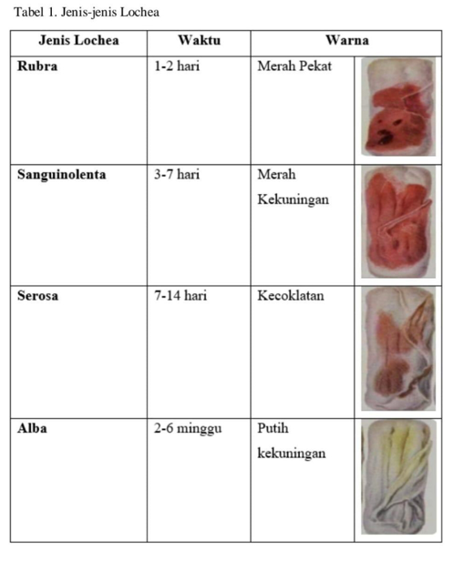
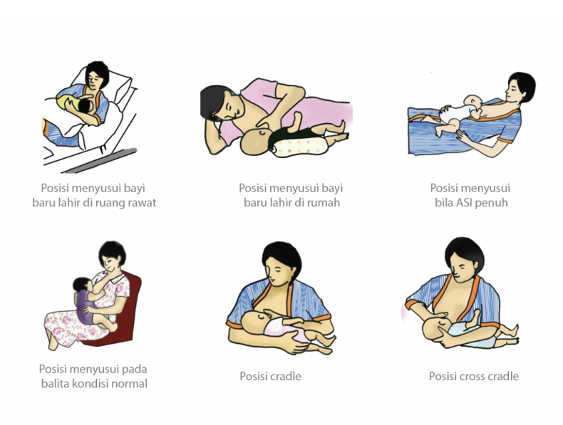
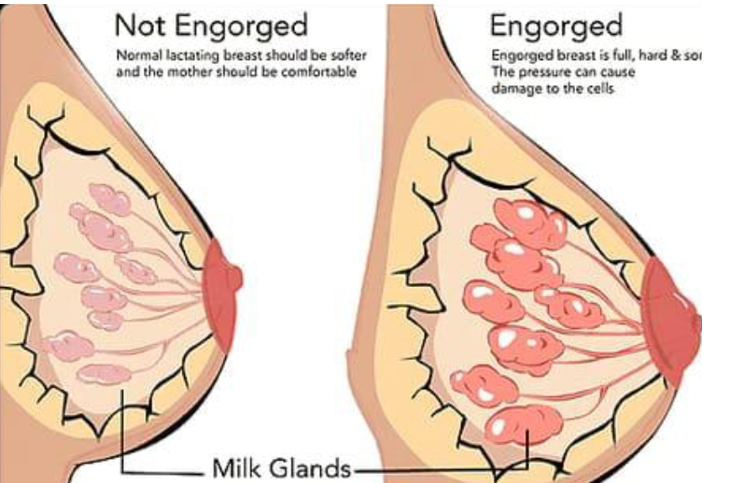
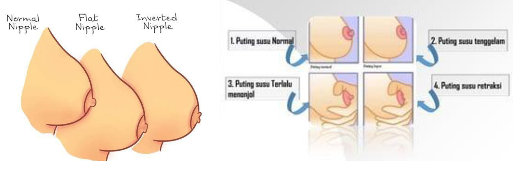

KUNJUNGAN NIFAS
Pelayanan nifas ialah pelayanan kesehatan terpadu serta menyeluruh yang ditawarkan bagi ibu serta bayi selama enam jam hingga 42 hari setelah kelahiran. Kunjungan nifas atau biasa disebut dengan istilah KF dilakukan minimal empat kali. Kunjungan ibu dan bayi baru lahir dilakukan pada waktu yang bersamaan.
Jenis dan Tujuan Kunjungan Nifas
Kunjungan I (6 jam - 2 hari): Mencegah perdarahan, memberi ASI awal, dan menjaga bayi dari hipotermia.
Kunjungan II (3-7 hari): Memastikan involusi uterus normal, mendeteksi infeksi, dan mendukung ibu dalam menyusui.
Kunjungan III (8-28 hari): Memantau kesehatan ibu dan bayi, serta memberikan edukasi lanjutan.
Kunjungan IV (29-42 hari): Memberikan edukasi KB dini dan menangani komplikasi jika ada.
Tanda Bahaya Nifas
Tanda bahaya pada masa nifas harus segera dikenali agar ibu mendapatkan penanganan medis yang cepat. Beberapa tanda bahaya meliputi:
- Demam lebih dari 2 hari.
- Pendarahan abnormal atau cairan berbau dari jalan lahir.
- Nyeri payudara yang disertai pembengkakan.
- Tanda depresi postpartum, seperti sedih berlebihan tanpa sebab.
- Komplikasi lain seperti nyeri ulu hati, mual muntah, pandangan kabur, atau kejang.
Jenis Jenis Pengeluaran Darah Pada Masa Nifas (Lochea)
-
Lochea Rubra
Lochea ini muncul pada hari pertama dan keempat setelah melahirkan. Cairan yang keluar berwarna merah karena mengandung darah segar, sisa jaringan plasenta, jaringan dinding rahim, lemak bayi, lanugo (rambut bayi), dan mekonium. -
Lochea Sanguenolenta
Lochea ini berlendir berwarna coklat kemerahan yang berlangsung dari hari ke 4 sampai hari ke 7 setelah melahirkan. -
Lochea Serosa
Mengandung serum, leukosit, dan robekan atau laserasi plasenta, lokia ini berwarna kuning-cokelat. Dari hari ke 7 hingga hari ke 14, anda akan keluar. -
Lochea Alba
Leukosit, sel desidua, sel epitel, lendir serviks, dan jaringan yang memperbaiki mati ada di Lochea. Lochea alba ini bisa bertahan selama 2 sampai 6 minggu setelah melahirkan. -
Lochea Purulenta
Infeksi yang terjadi pada uterus dengan ditandai keluarnya cairan seperti nanah yang berbau busuk. -
Lochiotosis
Lochea yang keluar tidak lancar.

TEKNIK MENYUSUI DAN PUMPING YANG BENAR
Menyusui adalah proses alamiah, tetapi membutuhkan teknik yang benar agar bayi mendapat nutrisi maksimal dan ibu merasa nyaman. Teknik yang salah dapat menyebabkan masalah seperti nyeri, pembengkakan, dan produksi ASI yang terganggu.
Teknik menyusui yang benar meliputi posisi ibu dan bayi yang nyaman, perlekatan yang baik, dan memastikan sebagian besar aerola masuk ke mulut bayi. Selain itu, setelah bayi menyusu, perlu dilakukan proses sendawa agar bayi tidak muntah.
Untuk ibu bekerja, pumping ASI menjadi solusi penting. Jadwal pumping dilakukan setiap 2-3 jam, dan hasil ASI perah perlu disimpan dalam botol kaca atau kantong steril dengan label tanggal dan waktu. Penting untuk menjaga kebersihan peralatan dan menghindari penyimpanan ASI di pintu kulkas karena suhu tidak stabil.
MASALAH PADA MASA NIFAS
Masalah dalam menyusui sering terjadi pada masa nifas, salah satunya adalah bendungan ASI, puting susu lecet, dan retraksi puting susu. Penanganan yang tepat dapat membantu ibu tetap menyusui bayi dengan optimal.
-
Bendungan ASI
Terjadi karena produksi ASI berlebih atau posisi menyusui yang salah. Tanda-tandanya meliputi payudara bengkak, keras, dan nyeri. Penanganan dilakukan dengan kompres hangat sebelum menyusui, kompres dingin setelahnya, serta memastikan perlekatan yang benar saat menyusui.  -
Retraksi Puting Susu
Kondisi di mana puting tertarik ke dalam sehingga sulit untuk menyusui. Solusi untuk kasus ringan adalah dengan stimulasi manual atau pompa ASI. Pada kasus berat, diperlukan tindakan medis untuk mengatasinya.
 -
Puting Susu Lecet
Disebabkan oleh teknik menyusui yang tidak tepat, seperti posisi bayi yang buruk atau trauma pada puting. Pencegahannya adalah memperbaiki posisi menyusui dan tidak menggunakan sabun pada puting. Penanganannya meliputi oleskan ASI pada puting yang lecet, istirahatkan sementara, dan tetap keluarkan ASI menggunakan tangan.

Definisi dan Jenis Bencana
Undang-undang Nomor 24 Tahun 2007 Tentang Penanggulangan Bencana menyebutkan bencana adalah peristiwa atau rangkaian peristiwa yang mengancam dan mengganggu kehidupan dan penghidupan masyarakat yang disebabkan, baik oleh faktor alam dan/atau faktor nonalam maupun faktor manusia sehingga mengakibatkan timbulnya korban jiwa manusia, kerusakan lingkungan, kerugian harta benda, dan dampak psikologis. Definisi tersebut menyebutkan bahwa bencana disebabkan oleh faktor alam, non alam, dan manusia. Oleh karena itu, Undang-Undang Nomor 24 Tahun 2007 tersebut juga mendefinisikan mengenai bencana alam, bencana nonalam, dan bencana sosial.
Berdasarkan penyebabnya, bencana dibagi menjadi tiga jenis utama:
Bencana Alam
Disebabkan oleh peristiwa alam seperti:
- Gempa bumi
- Tsunami
- Gunung meletus
- Banjir
- Kekeringan
- Angin topan
- Tanah longsor
Bencana Nonalam
Disebabkan oleh peristiwa nonalam, seperti:
- Gagal teknologi
- Gagal modernisasi
- Epidemi
- Wabah penyakit
Bencana Sosial
Disebabkan oleh aktivitas manusia, meliputi:
- Konflik sosial antar kelompok atau komunitas
- Teror
Kesiapsiagaan Dalam Bencana
Kesiapsiagaan bencana adalah serangkaian tindakan yang diambil sebelum terjadinya bencana untuk mengurangi risiko, meminimalkan dampak, dan memastikan respons yang efektif.
Langkah-Langkah Kesiapsiagaan Bencana :
1. Identifikasi Risiko dan Pemetaan Bahaya
2. Penyuluhan dan Pendidikan
3. Pengembangan Rencana Tanggap Darurat
4. Pembangunan Infrastruktur Tahan Bencana
5. Peningkatan Sistem Peringatan Dini
6. Kerjasama
Antar Lembaga
KIT Ibu Nifas Dalam Bencana